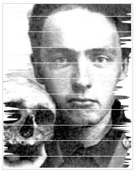

Алексей Кручёных (1886-1968)

Приведённые ниже колонки стихов придуманы поэтом-футуристом Алексеем Кручёныхом в начале ХХ века. В левой и правой колонках Кручёных представил два противоположных типа поэзии – старую поэзию (Пушкин, его современники и их последователи) и новую (заумную) поэзию.
|
I. пе — пе — пе пи — пи — пи се — се — се ля — ля — ля |
II. дыр — бул — щыл глы — глы — воггулы чагогдубия го — оснег — кайд |
1.
Дыр бул щил
убещур
скум
вы со бу
р л эз
2.
фрот фрон ыт
не спорю: влюблён.
Чёрный язык
То было и у диких племён.
3.
Та са мае
ха ра бау
саем сию дуб
радуб мола аль.
4. Плясов а я * *dance music
кваб
тарад
пин
пур
квара
куаба
вабакр
трбрк
брктр...
5. Бессмертье * *immortality
Мцэх
Хици
Мух
Ц л
Лам
Ма
Цкэ
Шокрэтыц
Мэхыцо
Ламошка
Шксад
Ца
Тял
хо
ео
ро
го
чо
ро
ча
га
ра
со
бо
ро
-
Ист о рия б у квы Ю
«Влажное Ю» (Лермонтов)
сокращённое ЁНИ?
Слюни нюни
ю ность юняне
Лилю (богиня любви)
Лилю
любхо юбка
кюсики вьюн юлить
Юпитер Юнона Юдифь
-
Ист о рия б у квы Ф
фило (любовь)
филей фижмы фиоль фиоли
фак -
хлюп любви
фиир-
Ф -форм фалоса
Фемина
фоска
фитиль
Фифи
8. Во е нный в ы зов з а у * *invitation, call
У у - а — ме — гон — э — бью!
Ом — чу — гвут — он
За — бью !..
Гва — гва … уге — пругу ...па – у...
- Та — бу — э — шиш !!!
Бэг — уун — а — ыз .
Миз — ку — а — бун — о — куз.
СА – СС А КУУИ!!!
ЗАРЬ Я !!! КАЧР Ю К!
1913-1916
Велим и р Хл е бников (1885-1922)
Бобэоби пелись* губы *sang
Бобэоби пелись губы,
Вээоми пелись взоры*, *the glances
Пиээо пелись брови,
Лиэээй — пелся облик*, *the visage
Гзи-гзи-гзэо пелась цепь.
Так на холсте* каких-то соответствий** *canvas **correspondences
Вне протяжения* жило Лицо. *beyond dimension
1908-1909